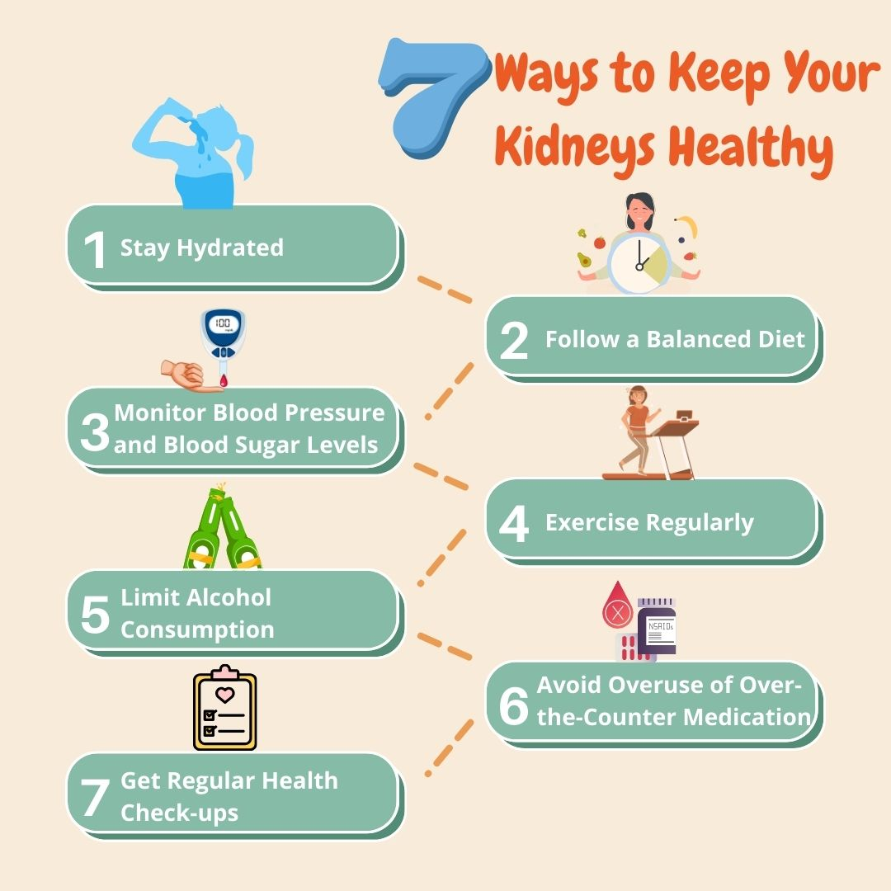
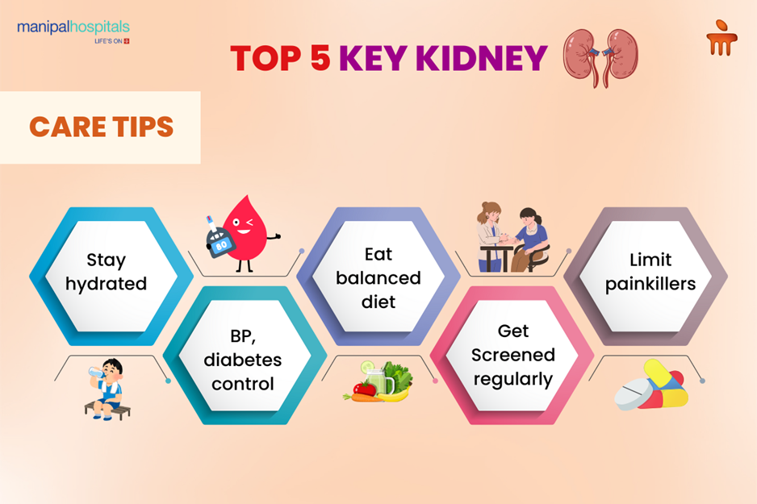

Kidney Care Guide
Importance of Kidney
Kidney humare body ka ek bahut important organ hai. Agar kidney sahi kaam na kare to body me bahut serious problems ho sakti hain.
Toxins nikalna (Filtering system) Kidney ka main kaam hota hai: Blood ko filter karna Waste (toxin) ko urine ke through bahar nikalna Agar ye kaam na ho → body me poison jama hone lagta hai
Drink
Agar kisiko kidney ki problem (jaise Chronic Kidney Disease ya kidney damage) hai, to alcohol (drink) lena generally safe nahi hota.
Kidney ka kaam hota hai body se toxins nikalna. Alcohol bhi ek toxin hai.
Jab kidney already weak ho:
- Alcohol us par extra pressure daalt
- Body me water balance bigaad deta hai
- BP (blood pressure) badha sakta hai
Bottom line:
Kidney problem me alcohol avoid karna hi best hai Apne aap decision mat lo — doctor ki advice zaroor lo
Final advice:
Drink karna possible ho sakta hai, lekin safe nahi hai — isliye avoid hi best hai.
Kidney Care Diet + Routine Plan
- Kya khana chahiye (Safe foods):
- Roti (gehun) ya thoda rice
- Lauki, tori, parval, tinda jaise light vegetables
- Apple, papaya, pear (limited quantity)
- Dahi (thoda)
- Dal (controlled amount)
- ❌Kya avoid karna hai:
- Zyada namak (salt) ❌
- Processed food (chips, maggi, fast food) ❌
- Cold drinks & alcohol ❌
- Zyada protein (paneer, chicken excess me) ❌
- Banana, orange, coconut water (potassium high hota hai — limit karo)
- Paani kitna piyen?
👉 Ye sabse important hai
- Na zyada, na kam
- Usually: 1.5–2 liter/day (but doctor se confirm karo)
-
Daily routine:
- Roz 20–30 min walk 🚶
- Proper sleep (7–8 hours) 😴
- Stress kam rakho
- Salt control:
- Din bhar me approx 1 teaspoon se kam namak
- Extra namak upar se mat daalo
- Pickles (achar) avoid karo
- Health control:
- BP regular check karo
- Agar diabetes hai to sugar control rakho
- Medicines time par lo
- Alcohol (important reminder):
👉🏻45% kidney me:
- Regular drinking ❌
- Occasional bhi risky hai
- Regular checkups
- 3–6 mahine me kidney test
- Creatinine, urea, BP monitor karo
Avoid
Agar kidney 45% kaam kar rahi hai (jaise Chronic Kidney Disease), to kuch cheezein strict avoid karna bahut zaroori hai, warna kidney aur jaldi weak ho sakti hai.
❌ Kya kya avoid kare
- Zyada namak (SALT):
- Achar
- Chips
- Namkeen
- Papad
- Packed food
- Junk & processed food
- Maggi, burger, pizza
- Bakery items
- Cold drinks
- High potassium foods (limit ya avoid)
- Banana
- Coconut water
- Aloo (zyada nahi)
- Tomato excess
Potassium badhne se heart aur kidney dono par effect padta hai
- Alcohol & smoking:
- Alcohol ❌
- Cigarette / tobacco ❌
Direct kidney damage + BP increase
- Painkiller medicines (bina doctor)
- Roz-roz painkiller lena ❌
Ye kidney ko dheere-dheere kharab karte hain
Ye BP badhata hai → kidney ko damage karta hai
Isme sodium+chemicals zyada hote hain
7 Simple Ways to Keep Your Kidneys Healthy

Agar kisi aadmi ki kidney health maintain rakhni hai, to kuch basic habits follow karna bahut zaroori hota hai. Sabse pehle body ko properly hydrated rakhna chahiye, kyunki paani toxins ko bahar nikalne me help karta hai. Iske saath ek balanced diet lena bhi important hai jisme kam namak, controlled protein aur fresh ghar ka khana ho. Blood pressure aur sugar levels ko regular check karna chahiye, kyunki ye dono problems kidney ko dheere-dheere damage kar sakti hain, khaaskar Chronic Kidney Disease ka risk badha deti hain. Roz thodi exercise karna, jaise walking, body ko healthy rakhta hai aur kidney function ko support karta hai. Alcohol ka consumption limit karna ya avoid karna best hota hai, kyunki ye kidney par extra pressure daalta hai. Saath hi bina doctor ki salah ke medicines (especially painkillers) ka zyada use nahi karna chahiye. Finally, regular health check-ups karwana zaroori hai, taaki kidney ki condition time par monitor ho aur koi problem badhne se pehle control ki ja sake.
Top 5 Key Kidney Care Tips

Kidney ko healthy rakhne ke liye daily lifestyle par dhyaan dena bahut zaroori hota hai. Rozana sahi amount me paani peena body ko clean rakhta hai aur kidneys ko smoothly kaam karne me help karta hai. Saath hi healthy aur balanced diet lena chahiye jisme junk food aur zyada namak se door rehna zaroori hai. Blood pressure aur diabetes ko control me rakhna bhi important hai, kyunki ye problems dheere-dheere kidney ko damage kar sakti hain aur Chronic Kidney Disease ka risk badha deti hain. Regular check-up karwana isliye zaroori hai taaki kisi bhi problem ka pata time par chal sake. Iske alawa bina doctor ki salah ke painkillers ya medicines lena avoid karna chahiye, kyunki ye kidneys par extra pressure daalte hain. Agar in sab baaton ka dhyaan rakha jaye to kidney ko lambe samay tak healthy aur strong banaya ja sakta hai.
Simple Rule yaad rakho:
“Light food + low salt + no alcohol = kidney safe”